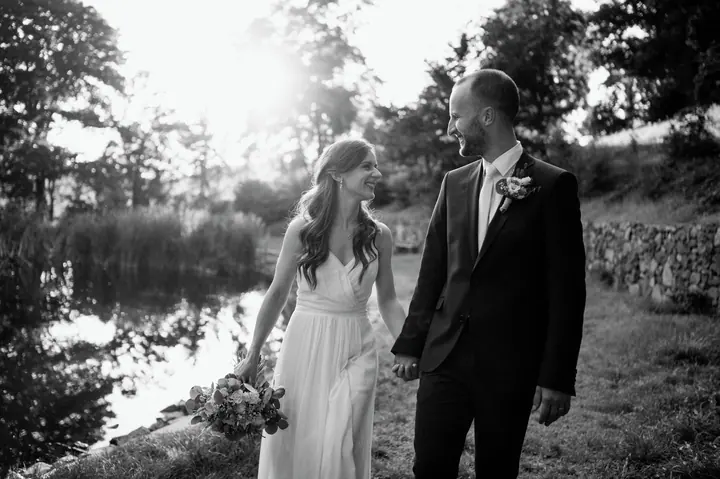

jedna
Svatby
Nabízím reportážní focení celého dne i stylizované portréty novomanželů. Snažím se být co nejvíc nenápadný, abych zachytil přirozené a upřímné momenty, a každou fotku pečlivě upravuji.


Jmenuji se Marek Šafář a fotka mě opravdu baví. Fotím hlavně svatby, od příprav až po večerní tanec, a také plesy. Nejvíc mě těší, když jsou na fotkách vidět opravdové emoce a radost, kterou spolu sdílíte.
Více o mně
Co fotím
jedna
Nabízím reportážní focení celého dne i stylizované portréty novomanželů. Snažím se být co nejvíc nenápadný, abych zachytil přirozené a upřímné momenty, a každou fotku pečlivě upravuji.
dvě
Fotím plesy včetně maturitních. Jsem v akci celý večer, aby vám neutekl žádný důležitý moment.
tři
Na svatbu nebo ples můžu přivézt i fotobudku, kde se hosté vyfotí sami.
Nově nabízím také tisk fotoproduktů prvotřídní kvality. Fotoknihy, obrazy, plátna nebo kalendáře z vašich fotek.

Ty nejlepší chvíle vyfotíme.

Za objektivem
Už jako malého kluka mě fascinovaly ty velké foťáky, které jsem vídal v rukou fotografů. Doma jsme měli jen malý kompakt Olympus. Zlom přišel v roce 2014, kdy si táta koupil zrcadlovku Nikon s návodem o 300 stranách. Ten jsem přečetl na jeden dech a táta svou zrcadlovku pochopitelně už nikdy neviděl.
Za roky focení jsem pochopil, že síla dobré fotky není jen ve foťáku nebo objektivu. Jde o důvěru, porozumění a chvíle, které spolu sdílíme. Proto mi záleží na tom, abychom si před focením našli čas popovídat, trochu se poznat a naladit na stejnou vlnu.
Když se cítíte uvolněně a v bezpečí, je to na fotkách vidět. Jsou plné skutečných emocí a opravdovosti a právě tohle zachytit je pro mě největší odměna. Miluji to, co dělám, a dělám si to po svém.
Marek
Napište mi nebo zavolejte a domluvíme se, jestli mám váš termín volný. Fotky jsou celoživotní vzpomínka, proto je důležité se na všem domluvit.
Před focením si najdeme čas popovídat, trochu se poznat a naladit na stejnou vlnu. Projdeme spolu, jak bude váš den vypadat.
Fotím reportážně a co nejvíc nenápadně, aby fotky zůstaly přirozené. Ve vhodnou chvíli si vás vezmu i na portréty novomanželů.
Každou fotku pečlivě upravím a předám vám ji v galerii na Pixinu pod heslem. Pokud budete chtít, vytisknu vám i fotoknihu nebo obraz.
Portfolio
Fotografie jsou ilustrační
Otázky
Ano, nabízím reportážní focení celého dne i stylizované portréty novomanželů. Rozsah si domluvíme podle toho, jak bude váš den vypadat.
Fotky odevzdávám přes systém Pixin. Vytvořím vám galerii, kde máte své fotky schované pod heslem a můžete je jednoduše stáhnout i sdílet.
Ano, nově nabízím tisk fotoproduktů prvotřídní kvality. Fotoknihy, obrazy, plátna i kalendáře. Objednat je můžete přímo přes můj web.
Ano, fotím plesy včetně maturitních. Na akci si můžete objednat i fotobudku.